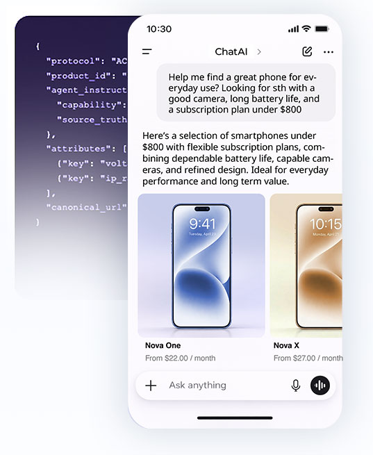

AI agents are becoming the primary discovery layer for product research and purchase decisions. Bluestone PIM ensures your products are the answer — structured, verified, and agent-ready before your competitors.
AI agents are becoming the first point of contact for critical questions: "Which model should I buy?", "What fits my budget?", "Compare these two." Legacy systems simply can't keep up with the pace of this new buying economy.
AI agents get vague, estimated, and miss. Product data without context is impossible for agents to reason with — resulting in wrong answers or no answer at all.
Built to serve humans, not agents. Hard to query, with schemas that no AI agent can interpret cleanly. Response times far too slow for real-time agent reasoning.
Agents can't reason across ERP, DAM, and CMS simultaneously. No single truth means conflicting answers, missed attributes, and zero citation authority.
The shift from search to discovery is happening. Companies that make their data ready for AI agents today are locking in opportunities for conversion, efficiency, and customer trust.
Get recommended by AI shopping agents with structured answers, verified specs, and contextual alternatives. Be the brand that agents trust.
See the gapEnable natural language buying. Customers get verified answers in seconds from AI — not ambiguous website results — resulting in faster purchase decisions.
See how it worksAI agents answer the routine product questions — freeing your support and sales teams from repetitive queries while improving response consistency and accuracy.
See The PushControl what information AI agents share about your products — down to attribute level. No hallucinations, no outdated specs, no off-brand answers. You govern the truth.
See governanceSee how an AI agent answers questions about your products when relying on unstructured web data vs. Bluestone PIM's structured product truth.
Illustrative examples based on real AI behaviour patterns with structured vs. unstructured product data.
Mountain bikes usually come with different options for things like gear sets and suspension, but it really varies a lot by brand and model. You'll typically need to check the manual or product page for the exact component variants available.
Don't just broadcast data — let agents know. Bluestone PIM acts as the central intelligence hub, ingesting from your legacy stack and fulfilling tailored real-time interactions with any AI agent.
Centralise fragmented data from ERP, CMS, DAM, and custom systems into a single, structured source of product truth — with no custom middleware required.
Serve fresh product data to agents dynamically. Fulfil both agent-initiated on-demand queries and brand-push structured feeds — simultaneously, without duplicating infrastructure.
Configure the 'Agentic Truth' with attribute-level controls, validation rules, and editorial workflows. You decide exactly what AI agents can see and say about your products.
Bluestone PIM's Agentic Feed uses the Model Context Protocol (MCP) to intelligently surface your inventory. The feed pushes structured product data, pricing, and contextual information directly to AI agents — before they even ask.
Rather than agents 'browsing' your website page by page, the Agentic Feed pushes curated, structured inventory to agents in a machine-optimised format. Agents receive the right product truth at the right moment — enabling instant, confident recommendations.

Product names, SKUs, category hierarchies, relationship mappings, and cross-reference identifiers.
Specs, dimensions, compatibility notes, variants, and the attributes that drive purchase decisions.
Live pricing, availability, subscription options, regional variants, and promotional context.
Authoritative product URLs, media assets, and citation anchors that AI agents use to ground their answers.
Give your product data a brain — without giving up control. Instead of a basic push, we enable AI agents to intelligently query your inventory. They get the 'reasoning' they need to recommend your products, while you maintain total governance — ensuring your data is always used, read, and permitted.
Become a true next-level MCP store. Allow AI agents to "pull" your PIM specifically in real time. It surfaces the exact logical response required to resolve customer queries — you curate the ground-truth it returns.
Rather than "spray-and-pray" spreading your catalogue, or running a fixed feed, the MCP layer makes your PIM conversational — each agent query, the pull system can truly, uniquely update, making the system the true authority.
Answers contextual questions and multi-step comparisons with full product hierarchy awareness.
API key scoping, PII tokenisation, and per-agent permission controls — enterprise-grade from day one.
Live product truth returned in real time — no batch refresh cycles, no data staleness window.
Expose structured MCP tools that agents call by name — find_product, compare_variants, check_availability.
Whether you're running a cutting-edge composable stack or managing traditional legacy systems, Bluestone PIM is designed to slot into your existing infrastructure. It acts as the unifying intelligence layer — transforming fragmented data into the verified product truth AI agents need, with zero platform migration required.
See the No-Migration PathAs the "Source of Truth" for AI, ensure your products are recommended by AI agents across every global shopping platform and assistant.
Enable natural language buying. Let customers interact with your products in a frictionless, conversational way — and purchase in the same flow.
Eliminate AI hallucinations. Ensure the specific attributes and recommendations AI agents give are grounded in your authoritative product data — always.